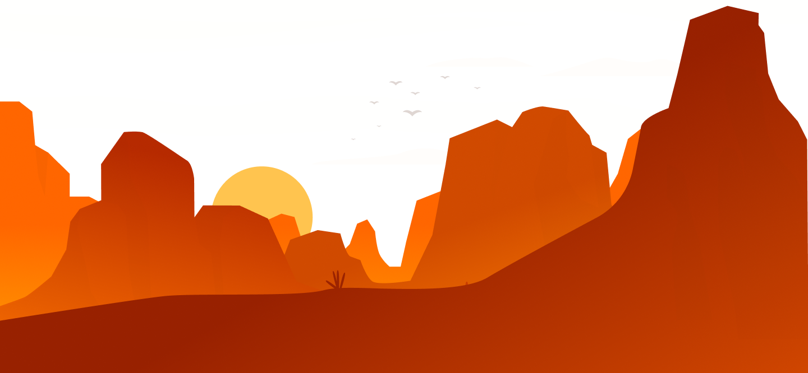

Mediodía en el desierto. La arena del desierto puede alcanzar temperaturas de hasta 70 grados. A esa hora
solo hay
un
insecto que se aventura a salir al sol. Se trata de una hormiga de aspecto metálico.
La clave está en sus pelos
El pelo plateado de su armadura guarda el secreto para una nueva generación de nanomateriales
capaces de resistir altas
temperaturas.
El secreto mejor guardado
Las hormigas plateadas solo salen a buscar comida a mediodía, cuando el calor es insoportable y
ningún depredador puede
acecharlas.
La explicación científica
El hábitat ya se conoce, pero nadie se había detenido a tratar de averiguar desde el punto
de vista de la física cómo
logra exactamente este animalito resistir semejantes temperaturas.
El "Traje de Astronauta"
La parte superior del cuerpo de estas hormigas está recubierta de una densa capa de vello plateado.
El microscopio
electrónico ha revelado que cada uno de estos pelos tiene una sección de corte triangular
hueca.
Un horizonte de posibilidades
Esta estructura tiene una propiedad muy poco común en la naturaleza: refleja tanto la
radiación electromagnética en el
rango visible para el ser humano, como una porción bastante amplia de radiación infrarroja.

Atacama Escudo Solar surge de la observación de las características de la
hormiga plateada del
desierto, combinada con
todos los beneficios de la nanotecnología.
De una pequeña hormiga, de una pequeña esfera, un gran aislante.